An open-source, cross-platform companion app to track your inventory, relics and rivens, monitor foundry progress and stay up to date with the worldstate.
Comb through your automatically updated inventory with filters and track pending items in your foundry.
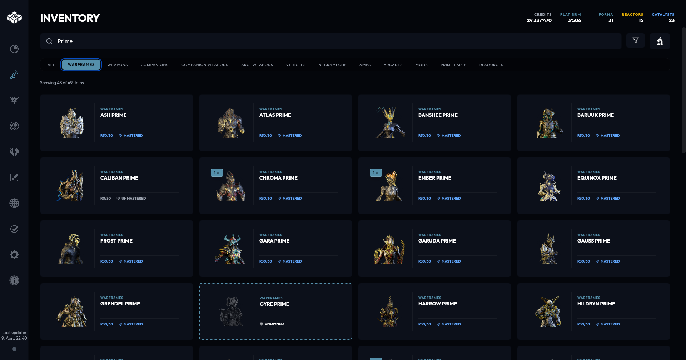
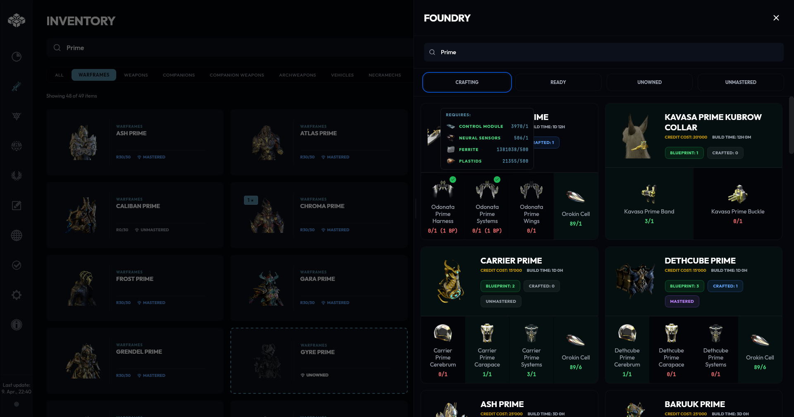
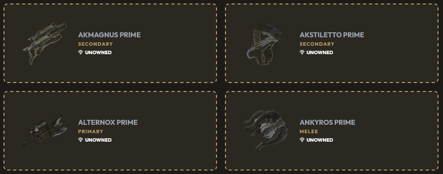
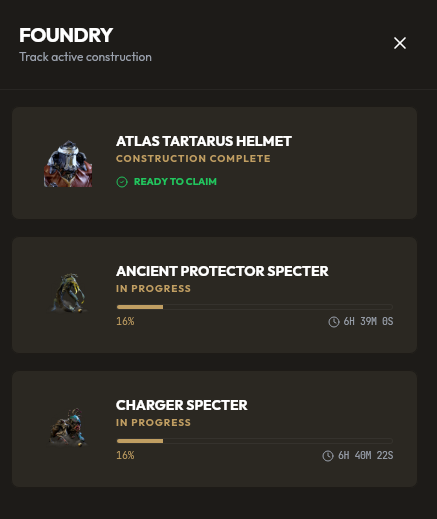
Displays your mastery progress with categories and shows everything yet to be mastered.
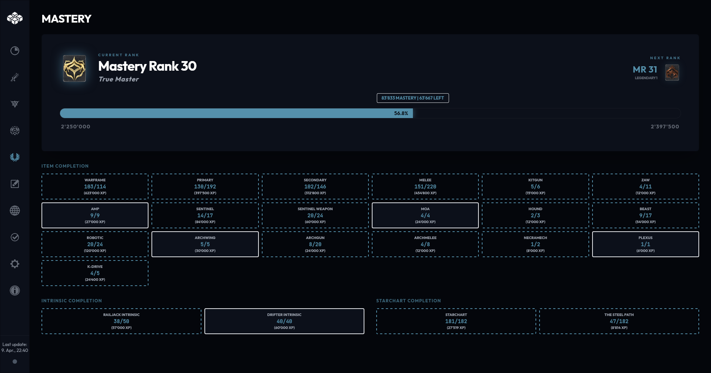
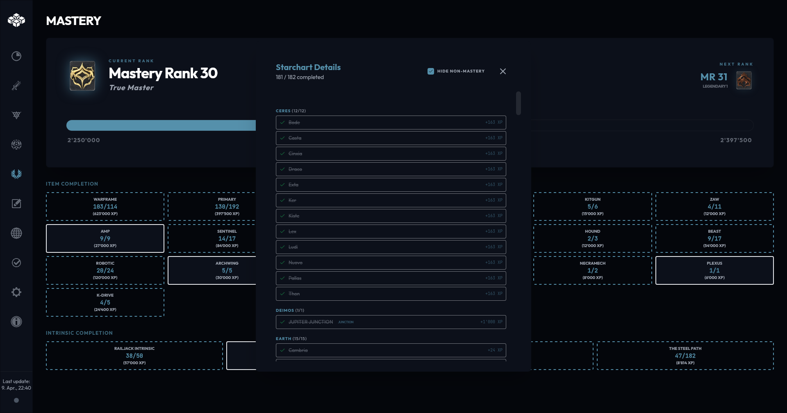
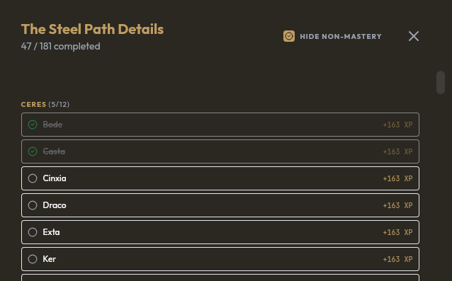
Provides live updates on alerts and events, world timers, fissures and arbitrations.
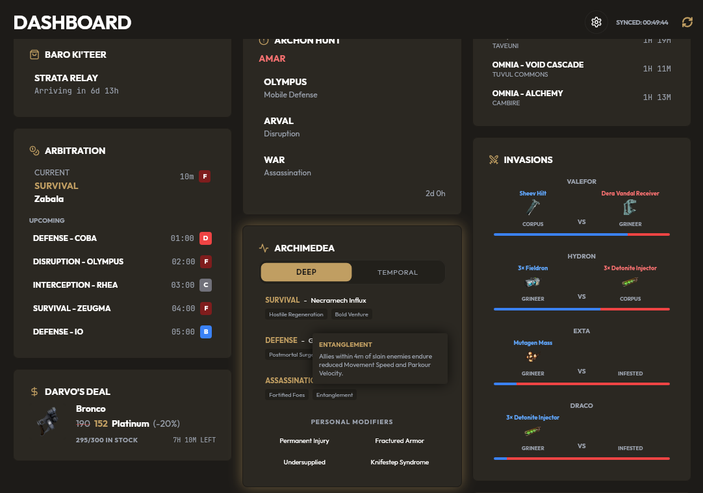
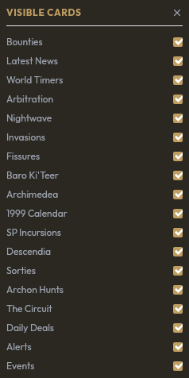
Track your relics and refinement and search for their drops.
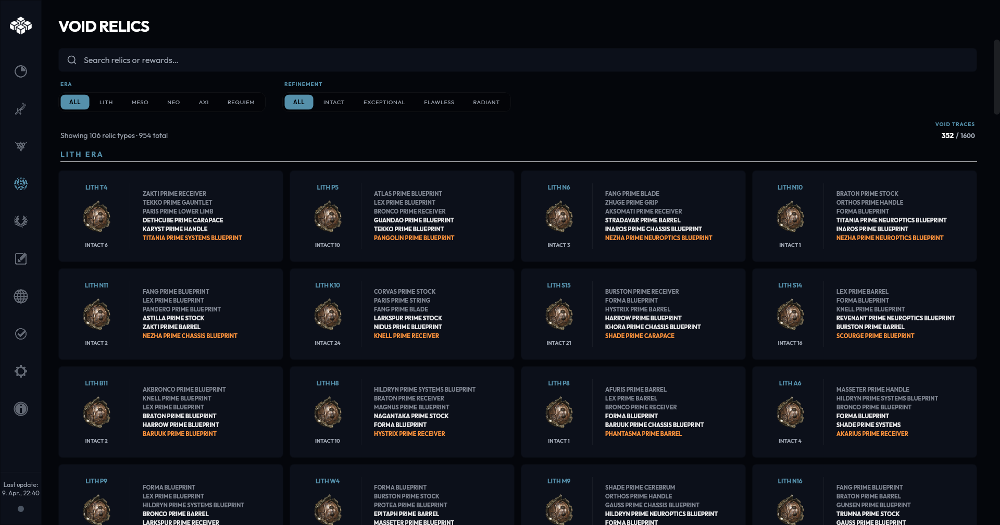
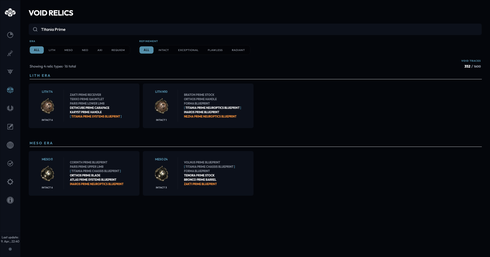
Track your riven mods, inspect their stats and see challenges of veiled rivens.
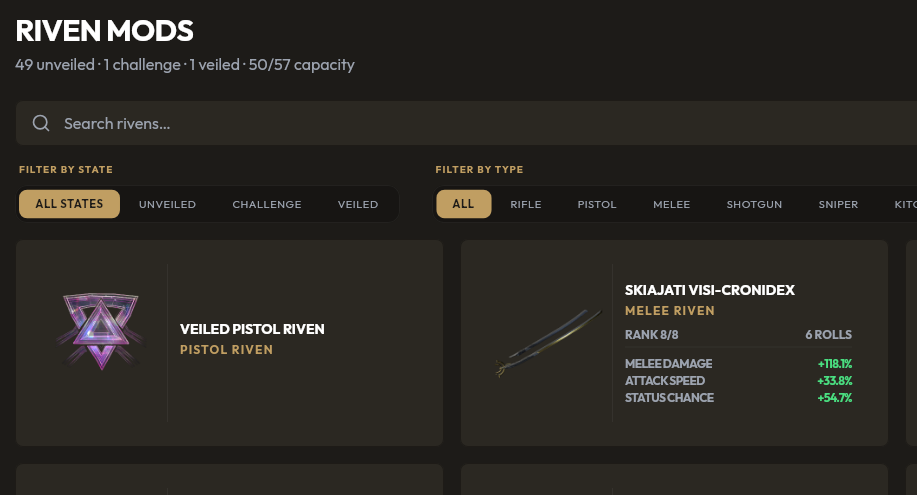
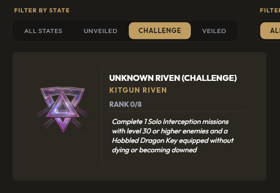
Write down notes, farming goals, strategies or paste in guides from elsewhere to make use of the markdown support.
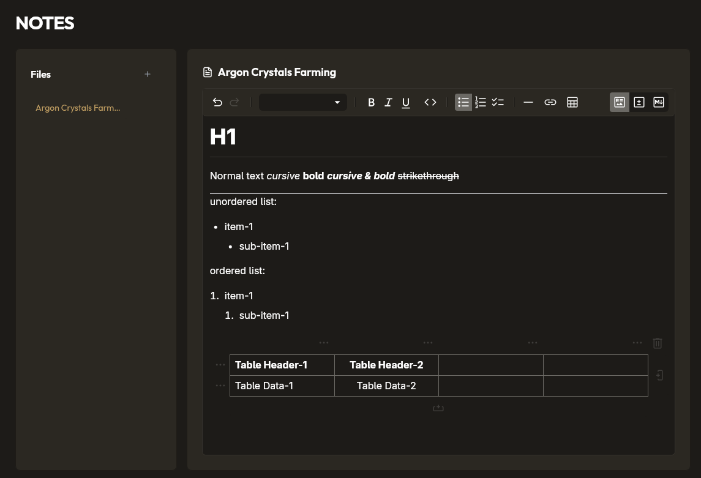
Check out the maps of all open worlds.
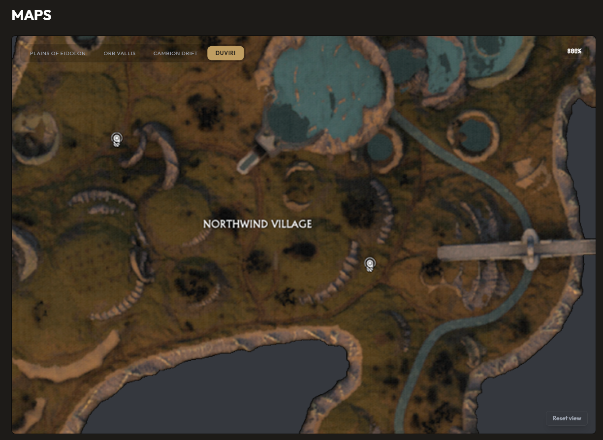
Track your progress on daily and weekly tasks.
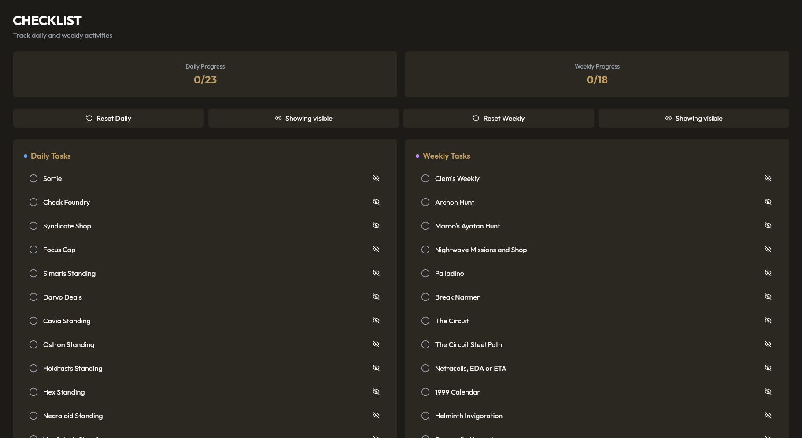
Choose between multiple color themes to match your preference.
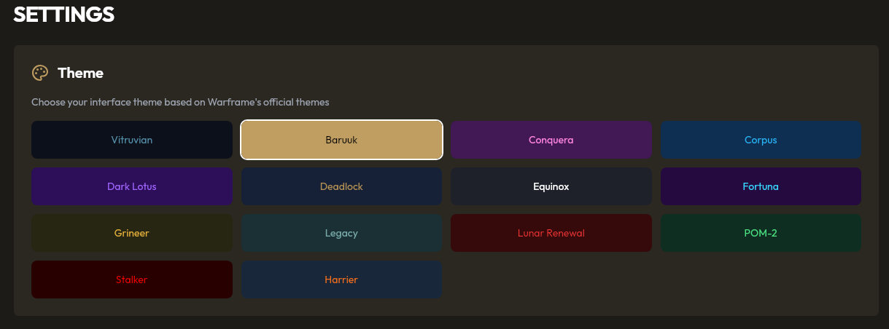
Cephalon Kronos was made to provide functionality without compromising privacy. Because of this, it does not send any information over the internet.
"My inventory is empty!"
This is expected at first startup. The application needs data to parse through, which means
that you either need to initiate a manual scan via the settings, or turn on continuous
monitoring.
"Do I have to turn on Live Monitoring?"
No, you do not have to turn on Live Monitoring. You can manually scan your inventory once
via the
settings. This will give you a momentary state of your inventory data, which the application
will show (even if offline) until said data is refreshed by either another manual scan, or by
turning on Live Monitoring.
"I found a bug!"
Great! Please report it on the issues page with as many details as possible.